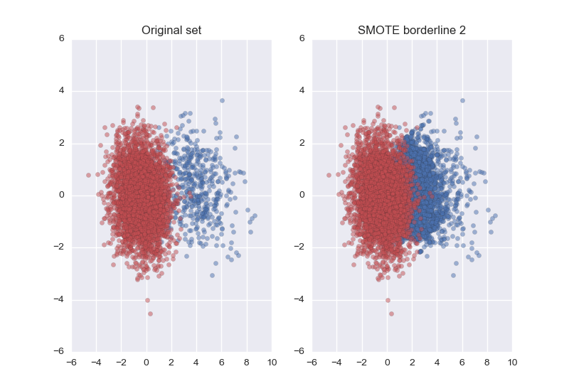

SMOTE borderline 2¶
An illustration of the random SMOTE borderline 2 method.
print(__doc__)
import matplotlib.pyplot as plt
import seaborn as sns
sns.set()
# Define some color for the plotting
almost_black = '#262626'
palette = sns.color_palette()
from sklearn.datasets import make_classification
from sklearn.decomposition import PCA
from imblearn.over_sampling import SMOTE
# Generate the dataset
X, y = make_classification(n_classes=2, class_sep=2, weights=[0.1, 0.9],
n_informative=3, n_redundant=1, flip_y=0,
n_features=20, n_clusters_per_class=1,
n_samples=5000, random_state=10)
# Instanciate a PCA object for the sake of easy visualisation
pca = PCA(n_components=2)
# Fit and transform x to visualise inside a 2D feature space
X_vis = pca.fit_transform(X)
# Apply Borderline SMOTE 2
sm = SMOTE(kind='borderline2')
X_resampled, y_resampled = sm.fit_sample(X, y)
X_res_vis = pca.transform(X_resampled)
# Two subplots, unpack the axes array immediately
f, (ax1, ax2) = plt.subplots(1, 2)
ax1.scatter(X_vis[y == 0, 0], X_vis[y == 0, 1], label="Class #0", alpha=0.5,
edgecolor=almost_black, facecolor=palette[0], linewidth=0.15)
ax1.scatter(X_vis[y == 1, 0], X_vis[y == 1, 1], label="Class #1", alpha=0.5,
edgecolor=almost_black, facecolor=palette[2], linewidth=0.15)
ax1.set_title('Original set')
ax2.scatter(X_res_vis[y_resampled == 0, 0], X_res_vis[y_resampled == 0, 1],
label="Class #0", alpha=.5, edgecolor=almost_black,
facecolor=palette[0], linewidth=0.15)
ax2.scatter(X_res_vis[y_resampled == 1, 0], X_res_vis[y_resampled == 1, 1],
label="Class #1", alpha=.5, edgecolor=almost_black,
facecolor=palette[2], linewidth=0.15)
ax2.set_title('SMOTE borderline 2')
plt.show()
Total running time of the script: (0 minutes 0.911 seconds)
Download Python source code:
plot_smote_bordeline_2.py
Download IPython notebook:
plot_smote_bordeline_2.ipynb